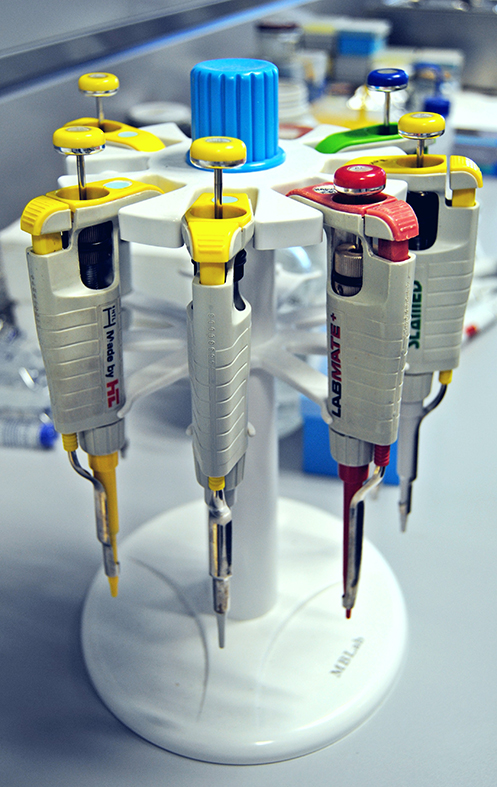

INICIO
GRUPO
Datos de identificación del grupo
Datos del responsable del grupo
Componentes del grupo
INVESTIGACIÓN
Proyectos
Líneas de investigación
Publicaciones en revistas científicas
Tesis dirigidas
SERVICIOS
OFERTA DOCENTE
OFERTA
1) Grado
2) Postgrado
ENLACES
CONTACTO
Líneas de investigación
Aspectos fisiológicos, bioquímicos y moleculares del estrés por frío en la poscosecha del calabacín
Mejora de la frigoconservación del fruto de calabacín mediante tratamientos físicos y químicos
Daños por frío en poscosecha
